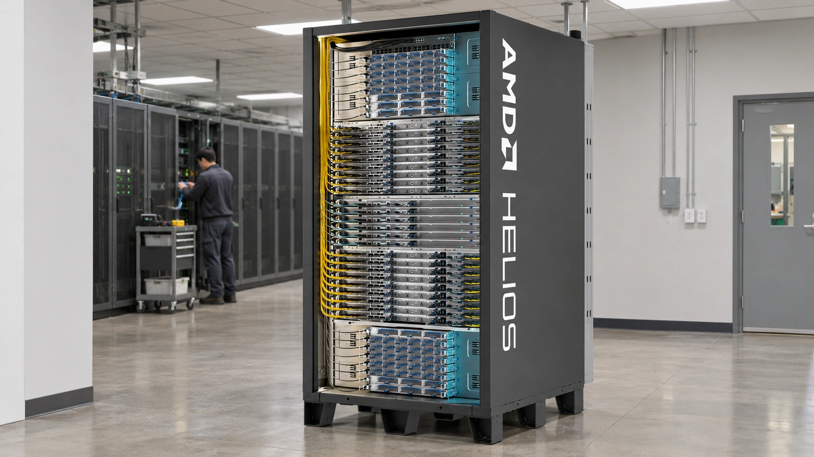

AMD’s $13.4 Billion Quarter Puts AI Infrastructure Demand Back in Focus
Data-center sales nearly doubled, while a $17 billion fourth-quarter forecast raises the stakes for AMD’s transition from individual chips to complete computing systems.

AMD reported record third-quarter revenue of $13.4 billion on November 3, up 45% from a year earlier, as its data-center business expanded 97% to $8.5 billion. The semiconductor designer expects approximately $17 billion of fourth-quarter sales, plus or minus 3%. That outlook gives the AI infrastructure debate a concrete new test: whether a rapidly expanding supplier can turn demand for computing capacity into another substantial increase in delivered revenue.
The results show why broad statements about the AI trade can obscure meaningful differences between companies. A chip supplier recognizes sales when its accounting requirements are met; the customer still has to install the equipment, operate it and earn an acceptable return. Strong supplier revenue therefore demonstrates purchasing activity without establishing that the entire chain of AI investment is equally profitable. That distinction matters when assessing both AMD’s opportunity and its customers’ spending.
A larger business, with a different mix
According to AMD’s release, GAAP net income reached $2.4 billion, or $1.46 per diluted share. Adjusted earnings were $2.09 per share. The company’s combined Client and Gaming segment generated $3.7 billion, down 8%, while Embedded revenue rose 29% to $1.1 billion. These figures make the quarter more specific than a uniform recovery across semiconductors: the fastest expansion came from infrastructure, while the combined consumer-facing segment moved in the opposite direction.
Using the rounded figures in the release, data centers accounted for roughly 63% of total revenue. That is a TTN calculation, rather than a separately reported company metric. It illustrates how much the composition of AMD’s business now influences the overall result. A smaller percentage movement in a large infrastructure segment can outweigh a more dramatic change in a smaller operation, making the source of growth as important as the consolidated growth rate.
Investors also need to keep the two earnings measures separate. GAAP and adjusted profit answer different questions because the adjusted presentation excludes specified expenses. A comparison that takes revenue from one accounting presentation and profitability from another can make a quarter appear cleaner than the underlying reconciliation warrants. TTN’s explanation of why an earnings beat can disappoint investors describes the additional role of expectations and forward guidance.
The competitive unit is becoming the rack
AMD’s Helios documentation describes a system integrating 72 Instinct MI455X GPUs with EPYC processors and networking. It is a reference design for partners, rather than a single finished AMD retail product. Its double-wide rack format, liquid cooling and modular trays illustrate a wider shift in the industry: competing for a customer’s workload increasingly requires coordinating the entire installation, rather than offering a faster accelerator in isolation.
For a buyer, the useful comparison is the cost of completing a workload reliably. That includes the purchase price of equipment, electricity, cooling, networking, software work and staff time. A lower-priced processor can become expensive if a deployment needs extensive engineering or suffers poor utilization. Conversely, a costlier system may be economical if it completes more useful work within the same power allocation. Neither outcome can be inferred from a headline specification alone.
AMD’s product materials also emphasize ROCm, its software environment for running accelerated workloads. Software portability matters because a customer changing hardware suppliers may have to adapt code, retest models and retrain operating teams. These are practical switching costs. Support for familiar tools can reduce friction, but vendor documentation is not an independent measurement of the expense or reliability of a particular customer’s migration.
The physical installation imposes a separate limit. A delivered rack needs an appropriate electrical connection, cooling capacity and network links before it can produce useful output. Those dependencies help explain why a server order, a shipment and a fully productive deployment are different milestones. TTN’s reporting on power delivery and financing in the data-center buildout provides the infrastructure context for that distinction.
The forecast becomes the next checkpoint
AMD’s $17 billion forecast is an expectation, not booked fourth-quarter revenue. Relative to the rounded $13.4 billion reported for the third quarter, it implies approximately 27% sequential growth at the midpoint, a TTN calculation. The scale makes shipment execution consequential: customer acceptance, manufacturing availability and the timing of system integration can influence how much of an anticipated ramp appears within a particular reporting period.
The next useful evidence will extend beyond a single sales figure. Revenue growth accompanied by sustained margins would suggest that additional volume is contributing to earnings. Cash collection would help establish whether accounting growth is converting into financial resources. A broader deployment base would reduce reliance on any individual buyer. These are analytical checkpoints, not claims that AMD has already achieved every condition or disclosed a particular future outcome.
The quarter strengthens the evidence that AI infrastructure purchases remain substantial at AMD. It does not settle the return its customers will ultimately earn, the durability of every spending plan or the appropriate valuation of the stock. For readers following the sector, the consequential change is the size of the operating business and the further increase management now expects to deliver. Execution against that forecast will provide a clearer answer than another general declaration about the AI boom.
Sources and methodology
Sources checked November 4, 2026. Market prices are dated observations. Company forecasts are attributed; implications and calculations are TTN analysis.